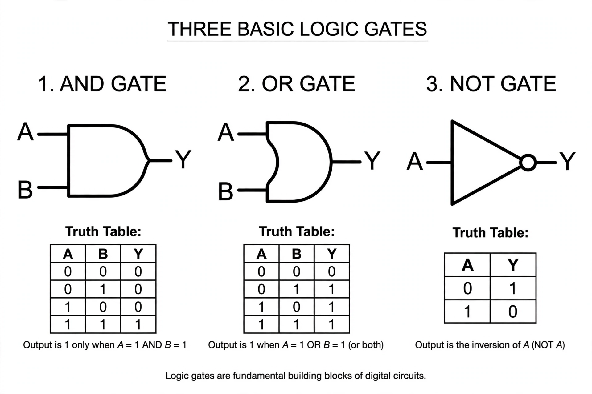

Boolean algebra

[Image: Logic gate symbols (AND, OR, NOT) with their truth tables]
In mathematics and mathematical logic, Boolean algebra is the branch of algebra in which the values of the variables are the truth values true and false, usually denoted 1 and 0. It is named after George Boole, who first defined an algebraic system of logic in the mid-19th century.
Unlike elementary algebra, where the main operations are addition and multiplication, the basic operations of Boolean algebra are conjunction (AND), disjunction (OR), and negation (NOT). Boolean algebra is fundamental to the design of digital electronic circuits and is used in computer programming and set theory.
History
Boole introduced the calculus of logic in The Mathematical Analysis of Logic (1847) and developed it in An Investigation of the Laws of Thought (1854). In 1937, Claude Shannon showed in his master's thesis that Boolean algebra could be applied to switching circuits, laying the theoretical foundation of digital circuit design.
Boolean algebra has been generalised in many directions, including Boolean rings, lattice theory, and the two-element algebra used in propositional calculus.
Operations and laws
The operations AND, OR and NOT obey laws including commutativity, associativity, distributivity, and De Morgan's laws, which relate conjunction and disjunction through negation. Any Boolean function can be expressed in disjunctive or conjunctive normal form, and truth tables decide whether two expressions are equivalent.
See also
- George Boole
- Propositional calculus
- Logic gate
- Logic
- Set theory
- Binary number
- Digital electronics
- Discrete mathematics